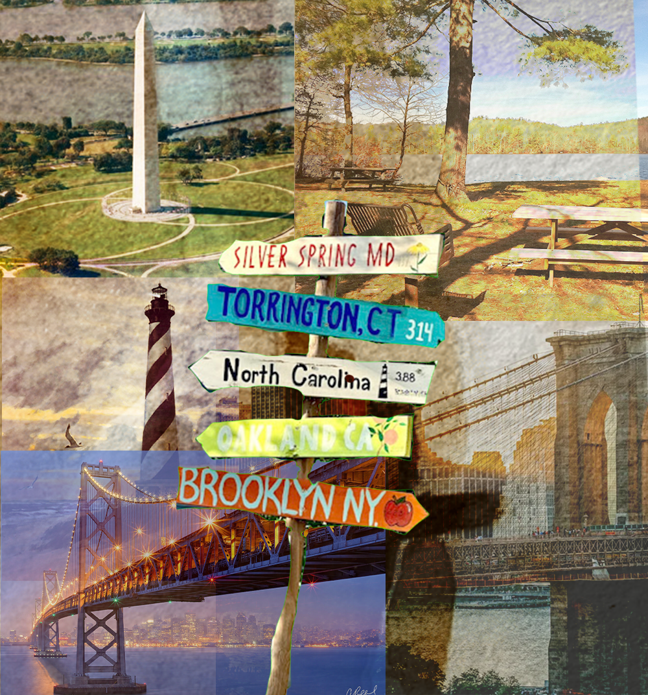

Image Project

Constructed in Photoshop, this digital composite uses layer masking and feathered brushes to blend five distinct geographical scenes into a single travel portrait. The design utilizes opacity adjustments and blending modes to achieve a weathered, vintage aesthetic across the various architectural and natural landscapes. As an unfinished piece, the project remains in an iterative stage which has yet to be integrated with realistic grounding or shadow work. These elements highlight a focus on thematic layout and spatial arrangement prior to the final refining of edges and background layers.


This AI-assisted version transforms the initial draft into a polished, vintage-style travel portrait by harmonizing the lighting and color across all five scenes. The image is now framed with a decorative deckle-edge border and includes cartographic details like a compass rose and nautical grid lines, creating a cohesive, archival feel. The AI’s influence is most clear in the smooth, painterly transitions that replace hard edges and the removal of technical artifacts like the transparency grid. By applying a consistent golden-hour warmth, the tool has shifted the project from an unfinished layout to a final piece where the central signpost is naturally integrated into the surrounding landmarks.